10 Berechnungen mit Wahrscheinlichkeiten
Letzte Änderung am 15. September 2023 um 15:11:04
“Die wichtigsten Fragen des Lebens sind in der Tat größtenteils nur Wahrscheinlichkeitsprobleme.” — Pierre-Simon Laplace
In diesem Abschnitt wollen wir uns nochmal die Grundlagen der Wahrscheinlcihkeitsrechnung vergegenwertigen. Vieles davon ist schon bekannt und dient der Auffrischung. Wir brauchen Wahrscheinlichkeiten und deren Berechnungen später in der direkten Anwendung in der Statistik. Wir konzentrieren uns hier zu Anfang auf den laplaceschen Wahrscheinlichkeitbegriff und werden noch andere in der Statistik kennen lernen. Zum Anfang soll aber der klassische laplacesche Wahrscheinlichkeitbegriff ausreichen.
Eigentlich habe ich in diesem sehr kurzen Leitfaden zur Mathematik nur eine echte Literaturempfehlung im Bereich der Wahrscheinlichkeitsrechnung und das ist das Buch Odds & Ends von Jonathan Weisberg. Das tolle Buch von Jonathan Weisberg ist online zu finden. Ein schönes Buch über Wahrscheinlichkeiten. Ich habe teilweise Beispiele aus dem Buch verwendet und darüber hinaus finde ich es sehr spannend zu lesen.
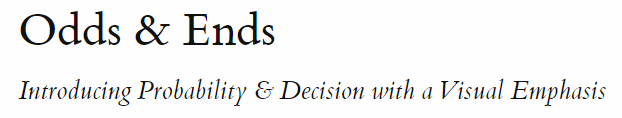
10.1 Laplacescher Wahrscheinlichkeitbegriff
Wenn du also eine Münze wirfst, dann erhältst du zufällig Kopf oder Zahl. Leider weißt du vorher nicht, auf welcher Seite die Münze landen wird. Wir können aber berechnen, wie groß die Wahrscheinlichkeit \(Pr\) für ein Ergebnis Kopf oder Zahl ist. Mit dem Bestimmen einer Eintrittswahrscheinlichkeit eines Ereignisses beschäftigt sich die Wahrscheinlichkeitsrechnung. Wir beginnen mit einem einstufigen Zufallsexperiment.
- Einstufiges Zufallsexperiment
-
Wir haben den Versuch nur einmal durchgeführt hast. Zum Beispiel wurde die Münze nur einmal geworfen. Der Würfel wurde nur einmal gerollt.
Wenn wir mit Wahrscheinlichkeiten rechen, dann ermitteln wir also die Wahrscheinlichkeiten \(Pr\) für ein bestimmtes Ereignis \(A\) in einem Zufallsexperiment. Im Folgenden siehst du die Schreibweise für die Wahrscheinlichkeit \(Pr\) für das Ereignis \(A\).

Die Wahrscheinlichkeit \(Pr(A)\) für das Auftreten des Ereignisses \(A\) ist 0.6. Hierbei ist wichtig, dass wir immer eine Wahrscheinlichkeit auf ein Ereignis beziehen. Ohne ein Ereignis ist eine Wahrscheinlichkeit nicht zu interpretieren.
- Ereignis
-
Ein Ereignis definieren wir selber. Zum Beispiel sind \(E_1 = \{\mbox{die Zahl ist größer als 3}\}\) und \(E_2 = \{\mbox{die Zahl ist gleich 6}\}\) Ereignisse. Je nach Ergebnis des Würfels wird entscheiden, ob das Ereignis eingetreten ist oder nicht.
Neben dem Ereignis \(A\) gibt es noch das Gegenereignis \(\bar{A}\) oder \(A'\). Das Gegenereignis tritt ein, wenn das eigentlich Ereignis nicht passiert ist. Wir berechnen die Wahrscheinlichkeit für das Gegenereignis \(Pr(\bar{A})\) in dem wir 1 minus der Wahrscheinlichkeit für das Eintreten des Ereignisses \(A\) rechnen.
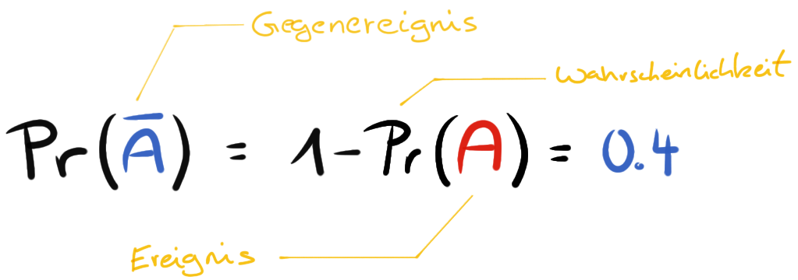
Für das Werfen einer Münze wäre das Ereignis \(A = \{Kopf\}\) gleich \(0.5\). Das Gegenereignis \(\bar{A} = \{Zahl\}\) wäre dann \(1-Pr(A)\) und somit auch \(0.5\). Hier haben wir es aber mit einer ‘fairen’ Münze in unserem Zufallsexperiment zu tun.
- Fair
-
Wir nutzen den begriff ‘fair’ für ein Objekt, wenn die Wahrscheinlichkeit für da Eintreten eines Ereignisses durch das Objekt über alle Ereignisse gleich ist. Bei einem idealen, ‘fairen’ Würfel hat wegen der Symmetrie jede der sechs Seiten von vornherein die gleiche Wahrscheinlichkeit, nach dem Wurf oben zu liegen.
Bei einer Münze ist die Sachlage ja relativ einfach. Im Folgenden sehen wir einmal die Ergebnismenge eines sechseitigen Würfels oder 1W6 genauer an. Bei einem Würfel haben wir ja mehrere Möglichkeiten ein Ereignis zu definieren.
- Ergebnis oder Ergebnismenge
-
Alles was bei einem Zufallsexperiment herauskommen kann. Ein sechsseitiger Würfel hat somit die Ergebnismenge \(E = \{1, 2, 3, 4, 5, 6\}\)
Bei einem sechseitigen Würfel können die Zahlen von eins bis sechs oben liegen.
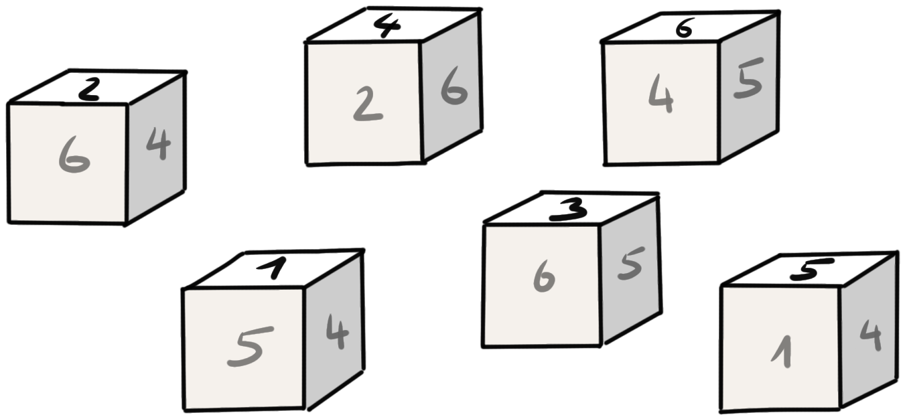
Jede der Zahlen hat eine Vorabwahrscheinlichkeit oder auch A-priori-Wahrscheinlichkeit für das Auftreten nach einem Wurf von \(1/6\) oder \(0.1\overline{6}\). Betrachten wir jetzt einmal verschiedene mögliche Ereignisse. Fangen wir mit dem Ereignis \(E_1 = \{\mbox{die Zahl ist gerade}\}\) an.
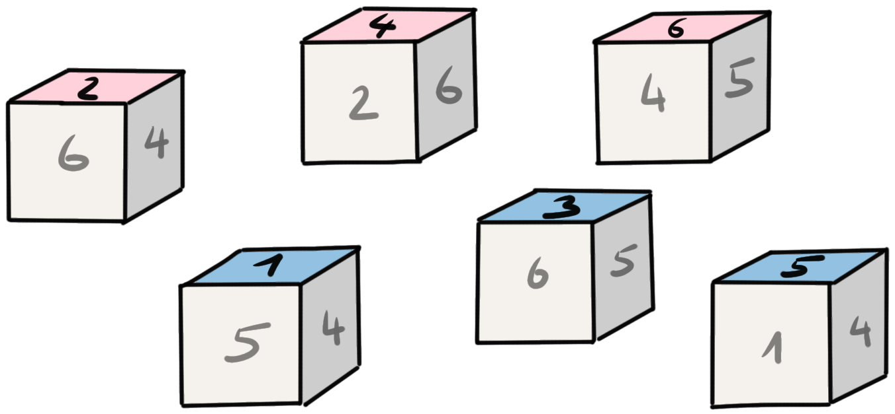
Wir teilen nun die Anzahl der betrachteten Ergebnisse durch die Anzahl aller möglichen Ergebnisse. Wir erkennen, dass wir mit \(2, 4\) und \(6\) drei Ergebnisse haben, die eine gerade Zahl darstellen. Insgesamt hat der Würfel sechs Seiten, so dass wir sechs mögliche Ergebnisse haben. Somit ist die Wahrscheinlichkeit \(Pr(E_1) = 0.5\). Die Gegenwahrscheinlichkeit \(\bar{E}_1 = \{\mbox{die Zahl ist nicht gerade}\}\) ist somit auch \(0.5\).
Als asbschließendes Abeispiel noch das Ereignis \(E_2 = \{\mbox{die Zahl ist größer gleich 3}\}\).
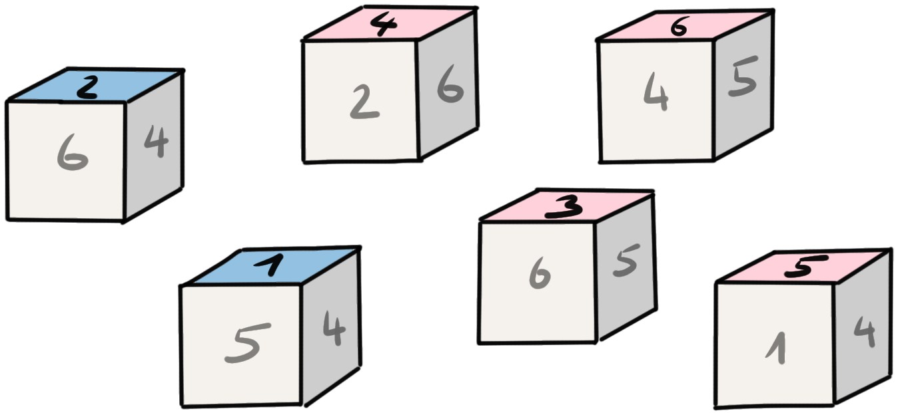
Hier haben wir dann eine Wahrscheinlichkeit \(Pr(E_2) = \cfrac{4}{6} = 0.6\overline{6}\) vorliegen. Wir haben vier Ergebnisse, die größer sind als gleich drei, von insgesamt sechs möglichen Ergebnissen.
Wir können diese Gedankenspiele auch mit anderen Würfeltypen oder Münzen durchspielen. Auch lässt sich hier sehr gut die Wahrscheinlichkeit für einen Gewinn und die Niete darstellen. In der Summe müssen sich die beiden Wahrscheinlichkeiten für das Eintreten der Ereignisse auf Eins summieren. Häufig ist aber so, dass wir nicht nur ein einstufiges Zufallsexperiment haben, sondern uns häufig fragen, wie ist die Wahrscheinlichkeit für \(A\), wenn schon \(B\) eingetreten ist.
10.2 Baumdiagramme und Pfadregeln
In einem Baumdiagramm verbinden wir zwei einstufige Zufallsexperimente in ein zweistufiges oder eben auch mehrstufiges Zufallsexperiment. Wir nutzen dafür das Baumdiagramm zur Visualisierung sowie die Pfadregeln zum Lösen der Wahrscheinlichkeitsrechnungen.
- Zweistufiges Zufallsexperiment
-
Wir führen den Versuch nun zweimal durch. Zum Beispiel wurde die Münze nur zweimal geworfen und wir wollen die Wahrscheinlichkeit für das Ereignis \(E_3 = \{\mbox{Kopf, Kopf}\}\) bestimmen.
Zusätzlich schauen wir uns auch noch die Vierfeldertafel an, die als Tabelle das Baumdiagramm für abhängige Ereignisse repräsentiert.
- Abhängige Ereignisse
-
Die Wahrscheinlichkeit für das Auftreten des Ereignisses \(A\) hängt von dem vorherigen Eintreten des Ereignisses \(B\) ab.
Schauen wir uns in Abbildung 10.1 einmal einen theoretischen Wahrscheinlichkeitsbaum an. Wir schreiben hier erstmal nur die Ereignisse \(A\) und \(B\) auf. Danach betrachten wir einmal die Sachlage an einem Beispiel für unabhängige Ereignisse und einmal für abhängige Ereignisse.
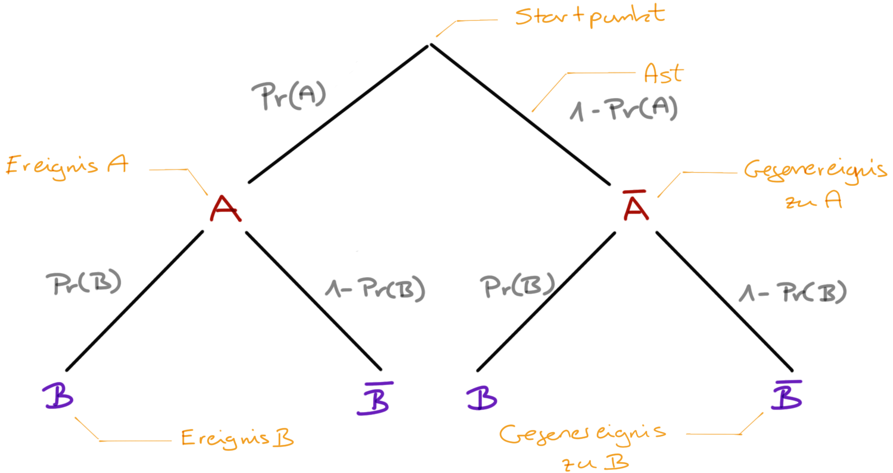
- Bei einem Baumdiagramm gibt es einen Startpunkt. Der Startpunkt wird auch Wurzel (eng. root) genannt oder aber auch als Ausgangspunkt bezeichnet. Wie immer gibt es für den gleichen Sachverhalt verschiedene Begrifflichkeiten.
- Von dem Startpunkt gehen so viele Äste ab, wie es in der ersten Stufe deines Zufallsexperiments Ereignisse gibt. Das Ereignis schreibst Du an das Ende des jeweiligen Astes. Meistens haben wir es mit einem Ereignis \(A\) und dem Gegenereignis \(\bar{A}\) zu tun.
- Das Ende jeden Astes stellt einen neuen Verzweigungspunkt dar, von dem alle in der nächsten Stufe möglichen Ereignisse abgehen. Dort kannst du die jeweiligen Zwischenergebnisse eintragen. Analog funktioniert das für alle weiteren Stufen. Meistens haben wir aber nur die Verkettung von zwei Ereignissen.
- Die Summe der Wahrscheinlichkeiten der Ereignisse auf einer Ebene des Baumdiagramms addiert sich zu 1 auf. Daher ist die Summe der Wahrscheinlichkeiten der Ereignisse \(A\) und dem Gegenereignis \(\bar{A}\) gleich 1.
- Der Weg vom Startpunkt bis zu einem der Enden wird als Pfad bezeichnet. Am Ende eines Pfades steht das Endergebnis und somit stellt das Ende auch keinen Verzweigungspunkt mehr dar.
- Jeder Pfad beschreibt ein Ereignis des gesamten mehrstufigen Zufallsexperiments. Jeder Verzweigungspunkt ein Zwischenereignis.
10.2.1 Unabhängiger Zufallsversuch
Wir werfen eine faire Münze zweimal und erhalten folgendes Baumdiagramm. Darüber hinaus gehen wir davon aus, dass wir es mit einem unabhängigen Zufallsexperiment zu tun haben.
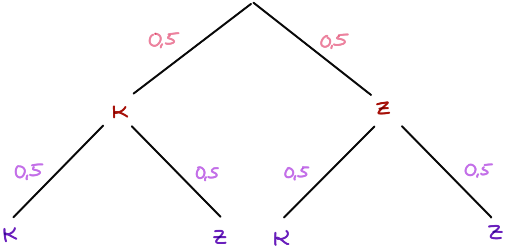
Die beiden Münzwürfe beeinflussen sich nicht. Wir sind an den Wahrscheinlichkeiten für das Ereignis \(E_3 = \{\mbox{(Kopf, Kopf)}\}\) und \(E_4 = \{\mbox{(Kopf, Zahl), (Zahl, Kopf)}\}\) interessiert. Wir wollen also im Ereignis \(E_3\) die Wahrscheinlichkeit für zweimal Kopf hintereinander bestimmen und bei dem Ereignis \(E_4\) die Wahrscheinlichkeit für Kopf und Zahl, wobei die Reihenfolge unerheblich ist.
- Multiplikationsregel (UND-Regel)
-
Sind zwei Ereignisse A und B unabhängig voneinander, dann gilt für die Wahrscheinlichkeit, dass beide zusammen auftreten: \(Pr(A \cap B) = Pr(A) \cdot Pr(B)\) Die Wahrscheinlichkeit, dass A und B zusammen auftreten ist \(Pr(A)\) mal \(Pr(B)\). Es wird zweimal hintereinander mit einem Würfel geworfen.
Wenn wir also die Wahrscheinlichkeit \(Pr(E_3)\) bestimmen wollen, dann müssen wir die Wahscheinlichkeiten \(Pr(\mbox{Kopf})\) aus dem ersten Wurf mit der Wahrscheinlichkeit für \(Pr(\mbox{Kopf})\) multiplizieren. Da wir eine faire Münze vorliegen haben, ist die Wahrscheinlichkeit für \(Pr(E_3) = 0.5 \cdot 0.5 = 0.25\).
- Additionsregel (ODER-Regel)
-
Die Wahrscheinlichkeit, dass ein Zufallsereignis eines von mehreren Resultaten liefert, ist die Summe der Einzelwahrscheinlichkeiten dieser Resultate. Es werden die Wahrscheinlichkeiten am Ende der Pfade addiert.
Wir wollen nun die Wahrscheinlichkeit für das Ereignis \(E_4\) berechnen. Dafür brauchen wir die Pfadwahrscheinlichkeiten für \(Pr(\mbox{Kopf, Zahl})\) sowie \(Pr(\mbox{Zahl, Kopf})\). In unserem Baumdiagramm können wir die Zahlen direkt am Ende der beiden Pfade ablesen. Die Wahrscheinlichkeiten sind jeweils \(Pr(\mbox{Kopf, Zahl}) = 0.25\) sowie \(Pr(\mbox{Zahl, Kopf}) = 0.25\). Jetzt addieren wir noch beide Wahrscheinlichkeiten auf und erhalten eine Wahrscheinlichkeit für \(Pr(E_4)\) von 0.5.
In der Mengenschreibweise können wir die Wahrscheinlichkeit für das Ereignis zweimal Kopf wie folgt schreiben. Das \(\cap\) steht dabei für das logische UND.
\[ \begin{aligned} Pr(Kopf \cap Kopf) &= Pr(Kopf) \times Pr(Kopf) \\ &= 1/2 \times 1/2 \\ &= 1/4 \end{aligned} \]
10.2.2 Abhängiger Zufallsversuch
Soweit haben wir uns einen unabhängigen Zufallsversuch angeschaut. Der zweite Münzwurf war unabhängig vom ersten Münzwurf. Oder der erste Münzwurf beeinflusst nicht den zweiten Münzwurf. Im Folgenden wollen wir uns ein abhängiges Zufallsexperiment anschauen. Wenn das Ereignis \(A\) oder das Gegenereignis \(\bar{A}\) auftritt, dann tritt das Ereignis \(B\) und das Gegenereignis \(\bar{B}\) nicht unabhängig voneinander auf. Das Ereignis \(A\) tritt mit einer Wahrscheinlichkeit von \(0.3\) auf. Somit tritt das Gegenereignis \(\bar{A}\) mit einer Wahrscheinlichkeit von \(0.7\) auf. Im Weiteren tritt das Ereignis \(B\) abhängig vom Auftreten von \(A\) oder \(\bar{A}\) mit unterschiedlicher Wahrscheinlichkeit auf. Im folgenden Baumdiagramm ist der Zusammenhang visualisiert.
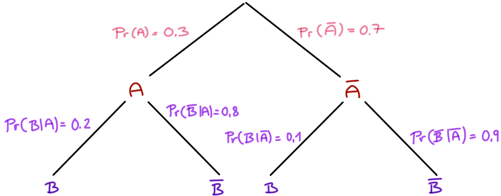
- Bedingte Wahrscheinlichkeit
- Wir schreiben \(Pr(B \mid A)\), wenn wir die Wahrscheinlichkeit für das Ereignis \(B\) bestimmen wolln unter der Bedingung das \(A\) schon eingetreten ist.
Die Wahrscheinlichkeiten am Ende der Pfade berechnet sich wie gewohnt mit der Multiplikationsregel. Wir können so die Wahrscheinlichkeit für \(Pr(A \cap B)\) für den ersten Pfad und die folgenden Pfade berechnen.
\[ \begin{aligned} Pr(A \cap B) &= 0.3 \cdot 0.2 = 0.06 \\ Pr(A \cap \bar{B}) &= 0.3 \cdot 0.8 = 0.24 \\ Pr(\bar{A} \cap B) &= 0.7 \cdot 0.1 = 0.07 \\ Pr(\bar{A} \cap \bar{B}) &= 0.7 \cdot 0.9 = 0.63 \\ \end{aligned} \]
Wenn dir die Schreibweise mit dem Bogen \(\cap\) ungewohnt ist, dann kannst du dir das Baumdiagramm auch als eine Kreuztabelle vorstellen. Wir tragen in die Felder immer den Wert ein, bei dem der Spaltenwert und der Zeilenwert gilt. Im ersten Feld gilt \(A\) aus der ersten Zeile und \(B\) aus der ersten Spalte.
| \(\mathbf{B}\) | \(\mathbf{\bar{B}}\) | Summe | |
| \(\mathbf{A}\) | \(Pr(A \cap B) = 0.06\) | \(Pr(A \cap \bar{B}) = 0.24\) | \(\mathbf{0.30}\) |
| \(\mathbf{\bar{A}}\) | \(Pr(\bar{A} \cap B) = 0.07\) | \(Pr(\bar{A} \cap \bar{B}) = 0.63\) | \(\mathbf{0.70}\) |
| Summe | \(\mathbf{0.13}\) | \(\mathbf{0.87}\) | \(1.00\) |
In der Kreuztabelle kannst du dann auch einfach die Wahrscheinlichkeiten für \(Pr(B)\) und \(Pr(\bar{B})\) unabhängig von dem Ereignis \(A\) und \(\bar{A}\) durch summieren bestimmen. In den Zeilensummen findest du die Wahrscheinlichkeiten für die Ereignisse \(A\) und \(\bar{A}\) mit \(Pr(A) = 0.3\) und \(Pr(\bar{A}) = 0.7\) wieder. In den Spaltensummen stehen dann die unabhängigen Wahrscheinlichkeiten für für \(Pr(B)\) und \(Pr(\bar{B})\) mit \(Pr(B) = 0.13\) und \(Pr(\bar{B}) = 0.87\).
Die bedingte Wahrscheinlichkeit \(Pr(B\mid A)\) können wir uns auch als Flächeanteil vorstellen. Im Folgenden haben wir die Ereignisse \(A\) und \(B\), die sich überschneiden. In der lila Fläche finden die Ereignisse \(A\) und \(B\) statt. Wir schreiben hier \(A \cap B\).
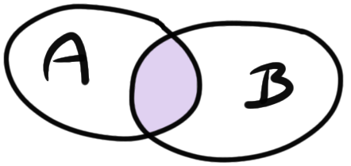
Wenn \(A\) gilt, wie wahrscheinlich sind wir dann in der lila Fläche, also gilt \(A \cap B\)? Das können wir dann einfach über den Anteil der Fläche \(A\cap B\) an der Fläche \(A\) berechnen. Das wiederum ist nichts anderes als die bedingte Wahrscheinlichkeit, dass \(B\) gilt, wenn \(A\) wahr ist.
\[ Pr(B\mid A) = \cfrac{Pr(A \cap B)}{P(A)} \]
Somit haben wir hier auf drei Arten uns nochmal vor Augen geführt, was eine bedingte Wahrscheinlicheit für das Eintreten eines Ereignisses bedeutet.
10.3 Satz von Bayes
Im vorherigen Abschnitt haben wir uns mit der Frage beschäftigt, wie wir die bedingte Wahrscheinlichkeit \(Pr(A \mid B)\) berechnen. Was ist aber, wenn wir an der bedingten Wahrscheinlichkeit für \(Pr(B \mid A)\) interessiert sind? Hier hilft uns der Satz von Bayes weiter, der die Umformung von bedingten Wahrscheinlichkeiten ermöglicht.
Siehe auch folgendes Beispiel aus Odds & Ends von Jonathan Weisberg zu verschiedenfarbigen Taxis.
Der Satz von Bayes ist wie folgt definiert. Für zwei Ereignisse \(A\) und \(B\) mit der Eintrittswahrscheinlichkeit \(Pr(B) > 0\) lässt sich die Wahrscheinlichkeit von \(A\) unter der Bedingung, dass \(B\) eingetreten ist, durch die Wahrscheinlichkeit von \(B\) unter der Bedingung, dass \(A\) eingetreten ist, errechnen:
\[ Pr(A\mid B) = \cfrac{Pr(B \mid A) \cdot Pr(A)} {Pr(B)} \]
mit
- \(Pr(A\mid B)\) ist die bedingte Wahrscheinlichkeit des Ereignisses \(A\) unter der Bedingung, dass \(B\) eingetreten ist,
- \(Pr(B\mid A)\) ist die bedingte Wahrscheinlichkeit des Ereignisses \(B\) unter der Bedingung, dass \(A\) eingetreten ist,
- \(Pr(A)\) ist die a-priori-Wahrscheinlichkeit des Ereignisses \(A\) und
- \(Pr(B)\) ist die a-priori-Wahrscheinlichkeit des Ereignisses \(B\).
Es ist wichtig zu merken, dass im Zähler immer die Wahrscheinlichkeit von der bedingten Wahrscheinlichkeit steht. Wir haben hier im Zähler \(Pr(B \mid A)\) also müssen wir hier mit \(Pr(A)\) multiplizieren und die Wahrscheinlichkeit \(Pr(B)\) kommt in den Zähler. Dann das ganze einmal an unserem Beispiel von oben durchgerechnet.
\[ \begin{aligned} Pr(A\mid B) &= \cfrac{Pr(B\mid A) \cdot Pr(A)} {Pr(B)} \\ &= \cfrac{0.2 \cdot 0.3} {0.13} \\ &= 0.46 \end{aligned} \] Wir nennen die bedingte Wahrscheinlichkeit von \(Pr(A \mid B)\) auch die inverse Wahrscheinlichkeit von \(Pr(B \mid A)\).
10.4 Mengenschreibweise
Im Folgenden sehen wir nochmal als Wiederholung verschiedene Mengenschreibweisen.
| Mengenschreibweise | Typ | ||
|---|---|---|---|
| \([a,b]\) | \([a,b]\) | \(\{x|a≤x≤b\}\) | geschlossen |
| \(]a,b[\) | \((a,b)\) | \(\{x|a<x<b\}\) | offen |
| \([a,b[\) | \([a,b)\) | \(\{x|a≤x<b\}\) | halboffen / rechtsoffen |
| \(]a,b]\) | \((a,b]\) | \(\{x|a<x≤b\}\) | halboffen / linksoffen |
10.5 Logische Operatoren
In Tabelle 10.1 nochmal die Zusammenfassung von Menge, mathematischer Mengenschreibweise sowie deren Bedeutung.
| Abbildung | Bedeutung | |
|---|---|---|
| 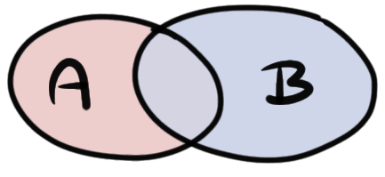 | \(A \cup B\) | \(A\) tritt ein oder \(B\) tritt ein |
| \(A \cap B\) | \(A\) tritt ein und \(B\) tritt ein | |
| 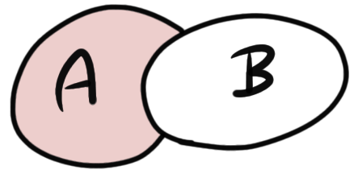 | \(A \setminus B\) | \(A\) tritt ein, aber \(B\) tritt nicht ein |
| 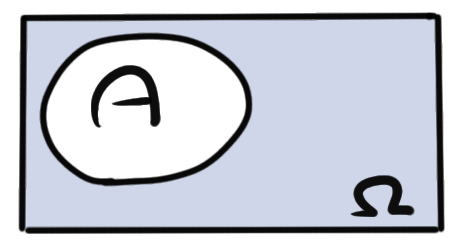 | \(\bar{A} = \Omega \setminus A\) | \(A\) tritt nicht ein |
| 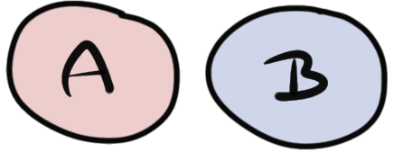 | \(A \cup B\) | Entweder \(A\) ein oder \(B\) tritt ein oder keins von beiden |
| 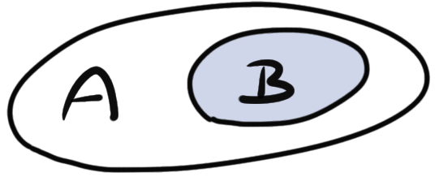 | \(B \subset A\) | \(B\) ist Teilmenge von \(A\) |